逐触点证据与分析
每张图都是当日真实页面的裁切与标注版；点击图片可放大。图下文字只解释图中可见事实，再给出差异和改进动作。
LP1
第一屏：学习入口给出的“我能得到什么”
昇腾 77NVIDIA 83我刚到这里，想判断它是不是一个能带我从课程走到实践与成长的地方。
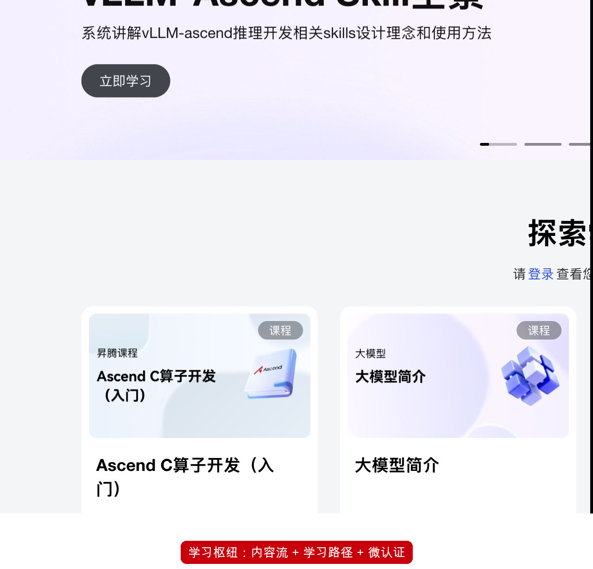
首页首先是当期内容 Banner 与“探索学习”课程卡。页面以课程、评分、时长与学习人数建立内容可信度；角色学习路径在后续楼层，不在当前首屏的唯一主行动中。
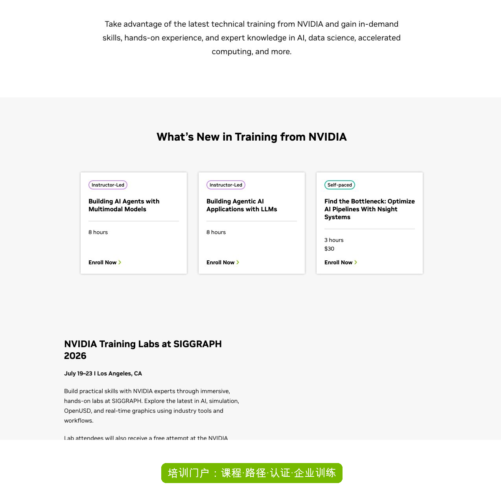
DLI 先说明技术培训、实操经验与专家知识，再将最新课程显示为讲师课或自学课，并在全局导航暴露 Find Training、Self-Paced、Workshops 与 Certification。
- 两边都不是空壳入口。昇腾内容更新感强、中文课程卡可直接阅读；NVIDIA 对“培训产品线”的边界表达更明确。
- 首屏动作强度不同。NVIDIA 从导航即分出课程搜索、形式、认证；昇腾先给内容流，角色和成长结构需要继续向下找。
建议 · P1在昇腾学习页首屏增加一个固定的“从目标开始”选择器：我想学什么 / 我是什么角色 / 我需要课程、实验还是认证，并保留当前热点课程作为次级内容。
LP2
从“想学大模型”到一条可执行学习路径
昇腾 69NVIDIA 82我不是来逛文章的；我需要把“生成式 AI 入门”收敛为下一门课、后续任务和可证明的结果。
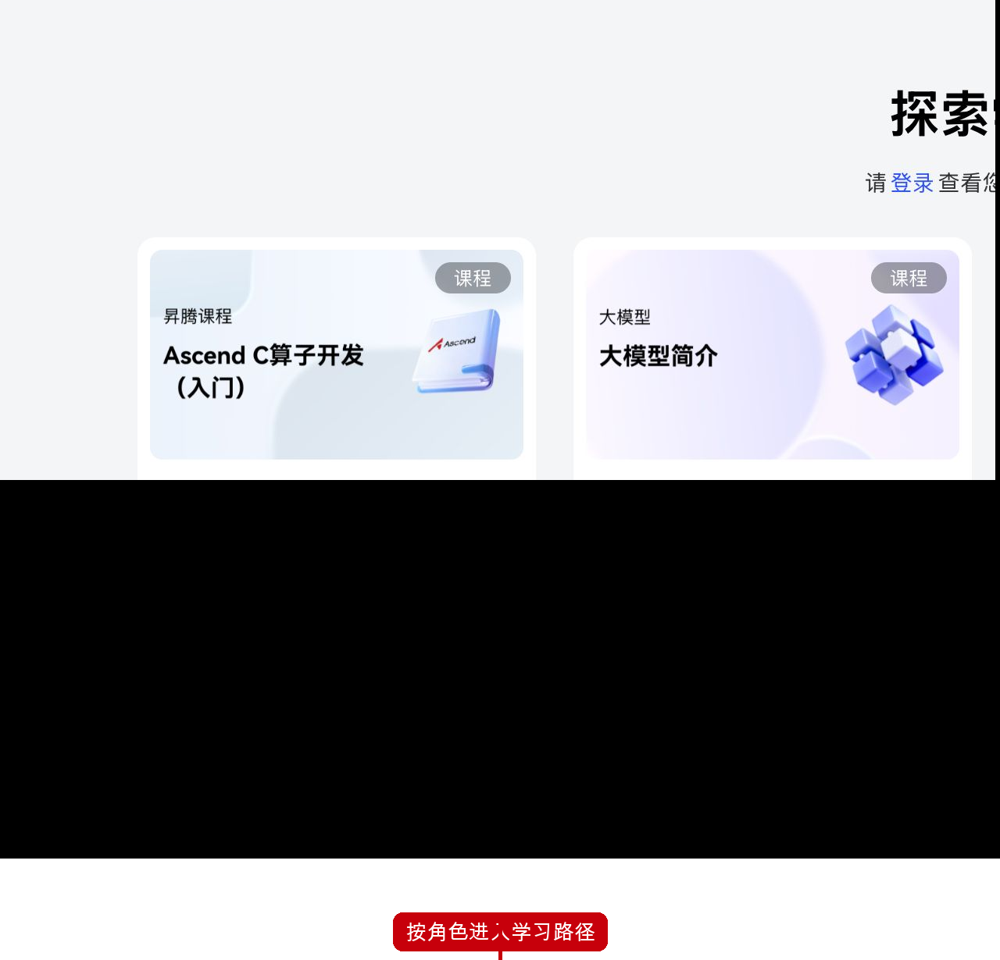
页面确有应用开发、推理开发、训练开发、框架开发四类路径，并列出“生成式AI入门”“CV/NLP微调”“强化学习与后训练”“PyTorch模型迁移”等子路径。这是昇腾的结构性长板，但在内容流和登录提示之后才出现。
NVIDIA · Find Training来源 ↗ 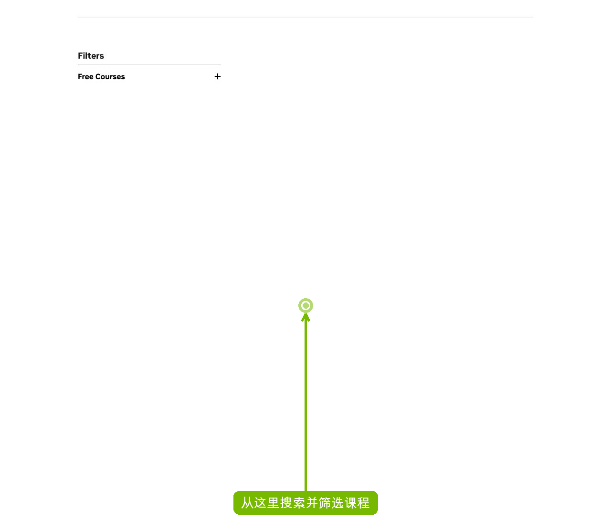
课程发现页在第一屏就有搜索框、筛选区、免费课程入口，以及 Learning Paths。它不替代学习路径，但先给学习者一个“从关键词/条件查到课程”的清楚入口。
- 昇腾的路径本体更贴近开发角色。四条技术角色路径能将课程与实际开发方向关联，是值得放大的资产。
- 关键摩擦在可发现性与收敛。学习者先遇到推荐卡、排行、轮播与登录提示，之后才看到角色路径；如果目标不在热门卡中，需要自己判断往哪里走。
- NVIDIA 的优势是先提供“检索与筛选”的控制权。用户可从 Find Training 或按主题自学页进入，不必先理解所有栏目。
建议 · P0把角色路径抬到首屏首个任务区，并加一个无登录可用的路径诊断器：目标（入门/微调/训练/部署）×基础（新手/有 PyTorch 基础）×时间（1 小时/半天/项目），输出“课程 → 在线实验 → 认证/项目”的连续清单。
LP3
选课：形式、主题、投入与免费机会是否透明
昇腾 78NVIDIA 85我愿意投入时间，但我要先知道这是一门自学课、讲师课还是认证准备；要多久、有没有成本、结束后能拿到什么。
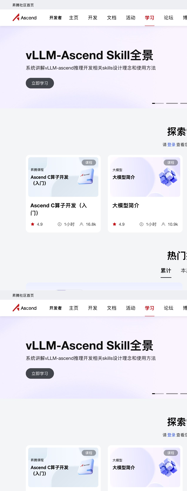
公开课程卡清楚显示课程类型、评分、时长、学习人数；例如“大模型简介”显示 1 小时和 10.9k。优点是中文、本地化、轻量起步信号直接；但完整的筛选与跨课程比较不是首屏主交互。
NVIDIA · Self-Paced Training来源 ↗ 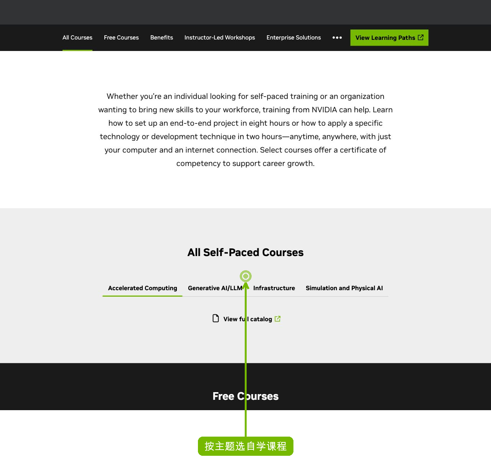
自学页先解释“只需电脑与网络”，再用 Accelerated Computing、Generative AI/LLM、Infrastructure、Simulation and Physical AI 分主题，并明确有免费课程、课程目录、讲师课与企业方案的分流。
- 昇腾强在低门槛的本地化课程信号。时长、热度和评分让用户容易挑一节短课开始。
- NVIDIA 强在课程产品化分层。自学、免费、讲师课、企业训练是显式入口，用户可依据时间和预算选择，不必通过内容卡推断形式。
- 两边的课内体验尚未在本报告断言。公开页均未以未登录态提供可完整验证的课程内容/结课状态，因此不拿“课程质量”做臆测评分。
建议 · P1为昇腾课程列表提供跨课程筛选与比较：方向、难度、时长、是否含实验、是否可获得微认证、前置环境、是否免费；课程卡增加“完成后你将能做什么”的成果句。
LP4
从学习到第一次动手：环境和下一步是否被接住
昇腾 84NVIDIA 86我不想只看完视频；我需要尽快跑出第一个可验证结果，而且不想先被本地环境卡住。
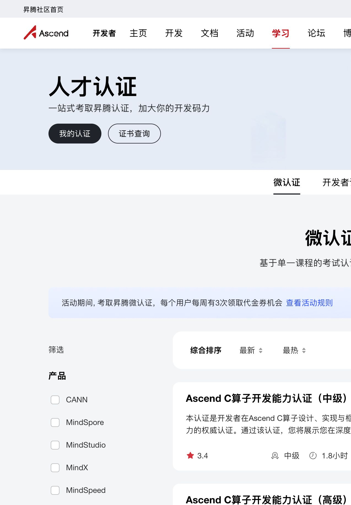
认证页公开说明“在线学习 → 动手实验 → 购买认证 → 在线考试 → 获取证书”，并把“在线实验”列为沉浸式体验入口。学习页也把在线实验列为学习资源，说明昇腾已具备免本地部署的学习承接能力。
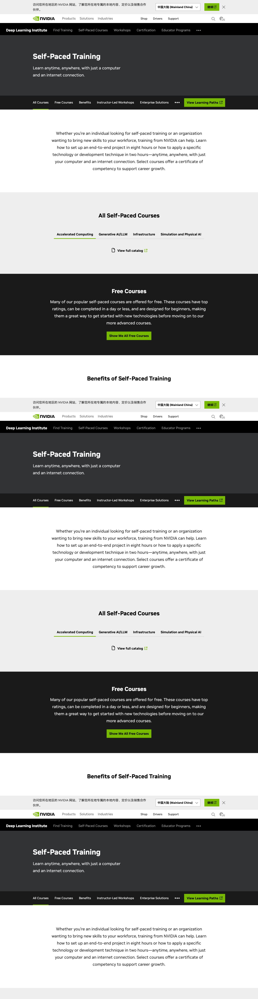
DLI 自学页明确写出可使用“fully configured, GPU-accelerated servers in the cloud”完成课程实验，并称课程使用的基础环境容器可从 NGC 延续到生产。这让实践环境和后续复用的承诺在同页可见。
- 这里差距很小，且昇腾有真实长板。在线实验直接降低本地 CANN/框架/硬件配置门槛，尤其适合尚未拥有设备的新学习者。
- 两边仍缺少公开、连续的“完成后下一步”证据。NVIDIA 更清楚说明云环境与容器延续；昇腾的在线实验、课程和后续工程之间的跳转，在当前公开页面中不够可见。
建议 · P1在每门入门课和实验完成页输出一个可带走的学习成果包：实验链接、等价本地工程、依赖版本、预期输出、下一项改造挑战和对应认证/文档链接。把“我跑过”变成“我能继续做”。
LP5
认证：把课程完成转化为可识别的成长信号
昇腾 80NVIDIA 84我学完后希望知道：该如何证明能力、认证考什么、证书对职业或下一项目有什么用。
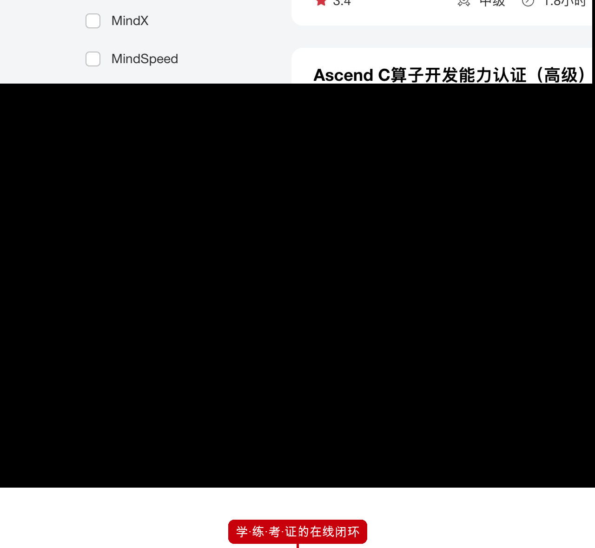
页面把“在线学习、动手实验、购买认证、在线考试、获取证书”明确串为流程，并写出课程、实验、活动与面试优先推荐等权益。微认证、开发者认证、职业认证的层次也已展示。
NVIDIA · Certification来源 ↗ 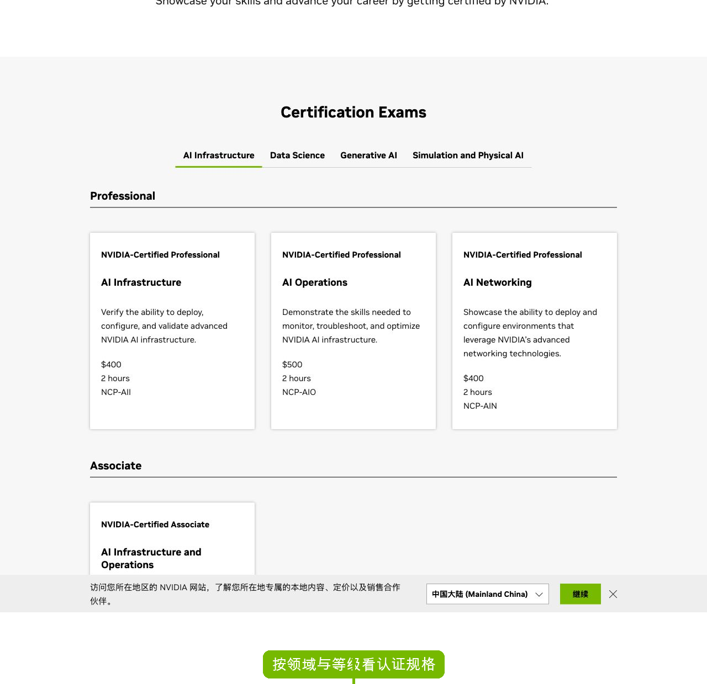
认证页按 AI Infrastructure、Data Science、Generative AI 等领域和 Professional/Associate 等等级展示考试，并公开每项认证的能力描述、价格与时长。例如 NCP-AII 标为 2 小时、$400。
- 昇腾的闭环叙事很完整。学、练、考、证被连接在同一流程中，并给出了本地开发者可感知的权益；这是门户层面应保留的优势。
- NVIDIA 的规格透明度更高。领域、等级、能力描述、时长和价格都在可浏览目录中，用户能先判断投入与认证定位。
- 昇腾需避免“权益多、标准不够显性”。页面当前仍显示“0 位学员已获得微认证证书”，这会削弱成熟度与社会证明，应优先核验并修正展示口径。
建议 · P1为每个昇腾认证公开能力地图、样题范围、建议前置课/实验、等级、时长、价格、证书样例与持证人规模；将课程结业页直接映射到相应认证，而不是让用户重新在认证页搜索。
LP6
学习后的延续：遇阻、求助、进阶与生态连接
昇腾 73NVIDIA 72我卡住或完成第一课后，不想回到一个断开的门户；我需要知道去哪查资料、问问题、进入下一个真实任务。
学习页下方直接连到昇腾文档、论坛和支持与服务；支持页文案承诺智能分配、1–2 个工作日答复。对中文开发者而言，课程、社区与技术支持在同一社区内可达，是实际承接优势。
NVIDIA · Training Support / Forums来源 ↗ 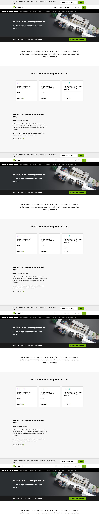
Training 页的页尾与主导航提供 Contact Us、FAQs、Training Newsletter、论坛、Developer Program 和学习路径。它覆盖完整，但帮助信息更分散在多个培训、开发者与论坛页面。
- 昇腾在本地化承接上略有优势。中文学习、论坛、文档、工单/支持的入口在同一个社区信息架构内，首次学习者不需先跨全球站点找中文帮助。
- 两边都有“课程内部断点”的风险。公开门户能链接到帮助，但尚未证明错误发生时课程会主动把用户送到正确文档/论坛话题。
建议 · P1把课程和在线实验的每个关键节点绑定“此处常见问题 → 对应文档 → 精准论坛标签 → 工单条件”；完成后推荐下一条路径或一个可提交的真实小项目，避免学习成果沉没在课程页里。